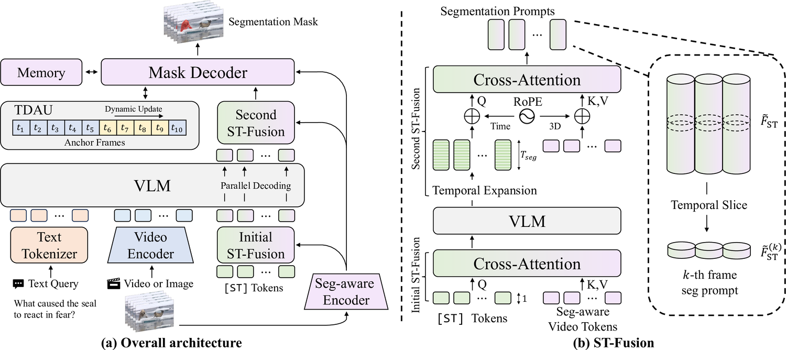
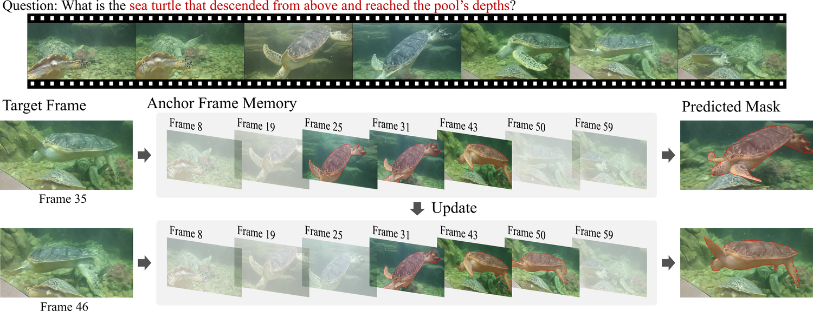
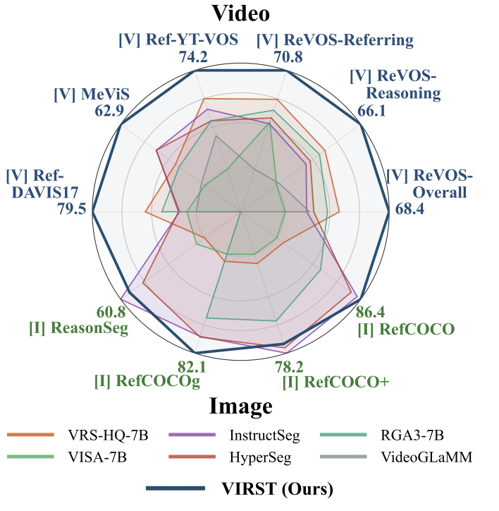

Expression: The aircraft that is most likely to be low on fuel.
We propose VIRST (Video-Instructed Reasoning Assistant for Spatio-Temporal Segmentation), an end-to-end framework that unifies global video reasoning and pixel-level mask prediction for Referring Video Object Segmentation (RVOS). VIRST bridges semantic reasoning and segmentation through Spatio-Temporal Fusion (STF), which injects segmentation-aware video features into a vision-language backbone. It further introduces a Temporal Dynamic Anchor Updater (TDAU) to maintain temporally adjacent anchor frames, providing stable temporal cues under large motion, occlusion, and object reappearance. VIRST achieves state-of-the-art results across diverse RVOS benchmarks under realistic and challenging conditions.
VIRST unifies video-level reasoning and pixel-level mask prediction in a single end-to-end RVOS framework. Instead of relying on a fixed keyframe or an external propagation pipeline, VIRST lets the vision-language model reason over the video while segmentation-aware features provide the spatial detail needed for accurate masks.
STF bridges semantic video tokens and dense segmentation features. Learnable [ST] tokens are fused with segmentation-aware video features before and after VLM reasoning, producing frame-specific prompts for the mask decoder.
TDAU maintains multiple temporally nearby anchor frames and updates them as the video progresses. This gives the decoder stable cues under large motion, occlusion, and object reappearance.
Training gradually aligns language reasoning, spatial grounding, and temporal consistency so the unified model can handle both referring and reasoning-oriented video segmentation.



| Model | Venue | Referring | Reasoning | Overall | R | ||||||
|---|---|---|---|---|---|---|---|---|---|---|---|
| J | F | J&F | J | F | J&F | J | F | J&F | |||
| Segmentation Expert | |||||||||||
| MTTR | ECCV'22 | 29.8 | 30.2 | 30.0 | 20.4 | 21.5 | 21.0 | 25.1 | 25.9 | 25.5 | 5.6 |
| ReferFormer | CVPR'22 | 31.2 | 34.3 | 32.7 | 21.3 | 25.6 | 23.4 | 26.2 | 29.9 | 28.1 | 8.8 |
| LMPM | ICCV'23 | 29.0 | 39.1 | 34.1 | 13.3 | 24.8 | 19.0 | 21.2 | 27.1 | 26.8 | 3.8 |
| MLLM-based Segmentation Method | |||||||||||
| LISA-7B | CVPR'24 | 44.3 | 47.1 | 45.7 | 33.8 | 38.4 | 36.1 | 39.1 | 42.7 | 40.9 | 9.3 |
| VISA-7B | ECCV'24 | 49.2 | 52.6 | 50.9 | 40.6 | 45.4 | 43.0 | 44.9 | 49.0 | 46.9 | 15.5 |
| VISA-13B | ECCV'24 | 55.6 | 59.1 | 57.4 | 42.0 | 46.7 | 44.3 | 48.8 | 52.9 | 50.9 | 15.5 |
| HyperSeg | CVPR'25 | 56.0 | 60.9 | 58.5 | 50.2 | 55.8 | 53.0 | 53.1 | 58.4 | 55.7 | -- |
| VRS-HQ-7B | CVPR'25 | 59.8 | 64.5 | 62.1 | 53.5 | 58.7 | 56.1 | 56.6 | 61.6 | 59.1 | 19.7 |
| VRS-HQ-13B | CVPR'25 | 61.1 | 65.5 | 63.3 | 54.1 | 59.4 | 56.8 | 57.6 | 62.5 | 60.0 | 18.9 |
| InstructSeg | ICCV'25 | 54.8 | 59.2 | 57.0 | 49.2 | 54.7 | 51.9 | 52.0 | 56.9 | 54.5 | -- |
| RGA3-7B | ICCV'25 | 58.7 | 62.3 | 60.5 | 53.1 | 57.7 | 55.4 | 55.9 | 60.0 | 58.0 | 28.6 |
| ViLLa-6B | ICCV'25 | -- | -- | -- | -- | -- | -- | 54.9 | 59.1 | 57.0 | -- |
| Ours (VIRST) | CVPR'26 | 68.8 | 72.8 | 70.8 | 63.9 | 68.3 | 66.1 | 66.3 | 70.6 | 68.4 | 21.8 |
| Model | Venue | MeViS | Ref-YT-VOS | Ref-DAVIS17 | ||||||
|---|---|---|---|---|---|---|---|---|---|---|
| J | F | J&F | J | F | J&F | J | F | J&F | ||
| Segmentation Expert | ||||||||||
| ReferFormer | CVPR'22 | 29.8 | 32.2 | 31.0 | 61.3 | 64.6 | 62.9 | 58.1 | 64.1 | 61.1 |
| OnlineRefer | ICCV'23 | - | - | - | 61.6 | 65.5 | 63.5 | 61.6 | 67.7 | 64.8 |
| SAMWISE | CVPR'25 | 49.5 | 46.6 | 52.4 | 69.2 | 67.8 | 70.6 | 70.6 | 67.4 | 74.5 |
| MPG-SAM2 | ICCV'25 | 50.7 | 56.7 | 53.7 | 71.7 | 76.1 | 73.9 | 68.8 | 76.0 | 72.4 |
| ReferDINO | ICCV'25 | 44.7 | 53.9 | 49.3 | 67.0 | 71.5 | 69.3 | 65.1 | 72.9 | 68.9 |
| MLLM-based Segmentation Method | ||||||||||
| LISA-7B | CVPR'24 | 35.1 | 39.4 | 37.2 | 53.4 | 54.3 | 53.9 | 62.2 | 67.3 | 64.8 |
| VISA-7B | ECCV'24 | 40.7 | 46.3 | 43.5 | 59.8 | 63.2 | 61.5 | 66.3 | 72.5 | 69.4 |
| VISA-13B | ECCV'24 | 41.8 | 47.1 | 44.5 | 61.4 | 64.7 | 63.0 | 67.0 | 73.8 | 70.4 |
| VideoLISA | NeurIPS'24 | 41.3 | 47.6 | 44.4 | 61.7 | 65.7 | 63.7 | 64.9 | 72.7 | 68.8 |
| VideoGLaMM | CVPR'25 | 42.1 | 48.2 | 45.2 | 65.4 | 68.2 | 66.8 | 65.6 | 73.3 | 69.5 |
| HyperSeg | CVPR'25 | - | - | - | - | - | 68.5 | - | - | 71.2 |
| VRS-HQ-7B | CVPR'25 | 47.6 | 53.7 | 50.6 | 68.3 | 72.5 | 70.4 | 72.6 | 79.4 | 76.0 |
| VRS-HQ-13B | CVPR'25 | 48.0 | 53.7 | 50.9 | 69.0 | 73.1 | 71.0 | 71.0 | 77.9 | 74.4 |
| InstructSeg | ICCV'25 | - | - | - | 65.4 | 69.5 | 67.5 | 67.3 | 74.9 | 71.1 |
| ViLLa-6B | ICCV'25 | 46.5 | 52.3 | 49.4 | 64.6 | 70.4 | 67.5 | 70.6 | 78.0 | 74.3 |
| Ours (VIRST) | CVPR'26 | 60.4 | 65.4 | 62.9 | 72.2 | 76.1 | 74.2 | 75.9 | 83.1 | 79.5 |
We show representative Referring Video Object Segmentation examples. Each row compares the original video with VIRST's predicted mask overlay for the corresponding language expression.
Expression: The aircraft that is most likely to be low on fuel.
Expression: The wineglass in which the wine may be finished first.
Expression: Grey parrot soaking its feathers in liquid.
Expression: The panda(s) that remains seated without moving throughout.
Expression: The three little bears following the big bear.
Expression: The big bear is leading three small bear cubs across the road.
Expression: The one with a deeper shade of fur among the two dogs roughhousing and having fun.
Expression: A bear standing tall and amusingly swinging a hula hoop with its neck.
@inproceedings{hong2026virst,
author = {Jihwan Hong and Jaeyoung Do},
title = {VIRST: Video-Instructed Reasoning Assistant for SpatioTemporal Segmentation},
booktitle = {Proceedings of the Computer Vision and Pattern Recognition Conference (CVPR)},
year = {2026},
}